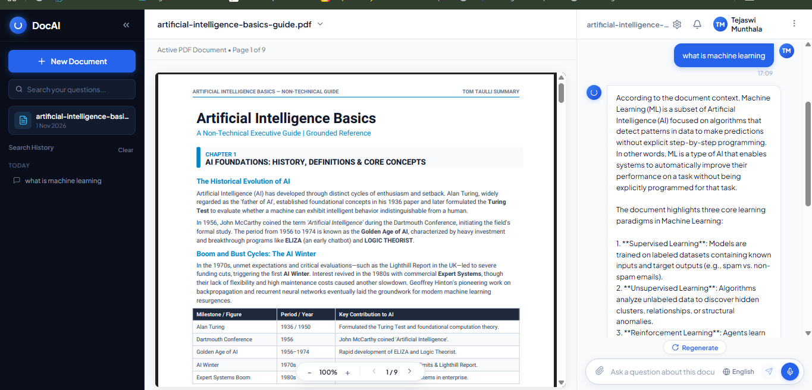

Ask questions and get answers grounded in your PDFs
DocAI is a document-focused AI assistant with a responsive three-pane workspace. Users can upload a PDF, read it in the built-in viewer, and ask questions in chat. Answers are grounded in extracted document passages and can point back to the relevant source pages.
Core experience
PDF workspace
View a document beside the conversation, navigate pages, and adjust the zoom while reviewing its contents.
Grounded Q&A
Ask questions in chat and receive responses based on the uploaded document, with page references for context.
Semantic retrieval
Extract and chunk PDF text, create sentence embeddings, and use FAISS similarity search to retrieve relevant passages.
Persistent sessions
Keep uploaded document data and chat session details in browser IndexedDB so the workspace can survive refreshes.
Voice input
Use browser speech recognition to ask questions by voice, with language selection for the chat experience.
Flexible inference
Support hosted Groq inference and local Ollama models for different deployment and privacy needs.
Architecture
Frontend
React 18 and Vite power the responsive interface, PDF viewer, chat, voice input, and IndexedDB persistence.
Backend and retrieval
FastAPI handles document and chat endpoints. PyPDF extracts text, Sentence Transformers creates embeddings, and FAISS retrieves relevant context for the language model.